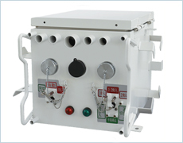

光通信を用いて遠隔から高圧送電線の監視および
開閉器を制御する装置
※この製品は電力会社専用品のため、ホームページでのご紹介のみとさせていただきます。
カタログ等の資料につきましてはご用意致しておりませんのでご了承ください。
配電線自動運用システムの光伝送路化に伴い新たに開発し、高速で大容量な通信が可能となりました。系統情報の変化、事故等を検知した場合は、本機が自発的に上位装置と連携して 迅速に事故復旧し、お客さまの停電区間を最小化して最大限の健全区間を確保します。
| 種類 | 開閉器用、電圧調整器用 |
|---|---|
| 制御 | 通信よる遠隔制御 |
| 状態監視 | 開閉器状態・線路電圧の有無 等々 |
| 状態変化通知 | 開閉器状態変化時、事故検知時 等々 |
| 計測機能 | 線路電圧電流計測、零相電流電圧計測、位相計測 |
| 構造 | ユニット構造 |
ご相談は計測システム事業部 Tel. 06-6387-1726